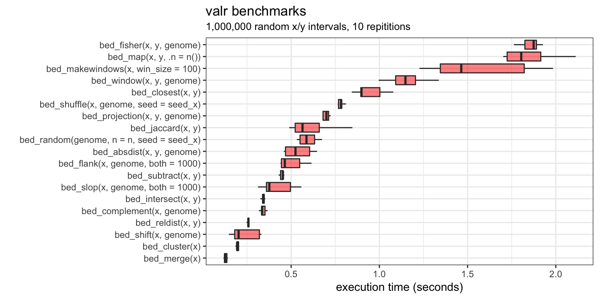
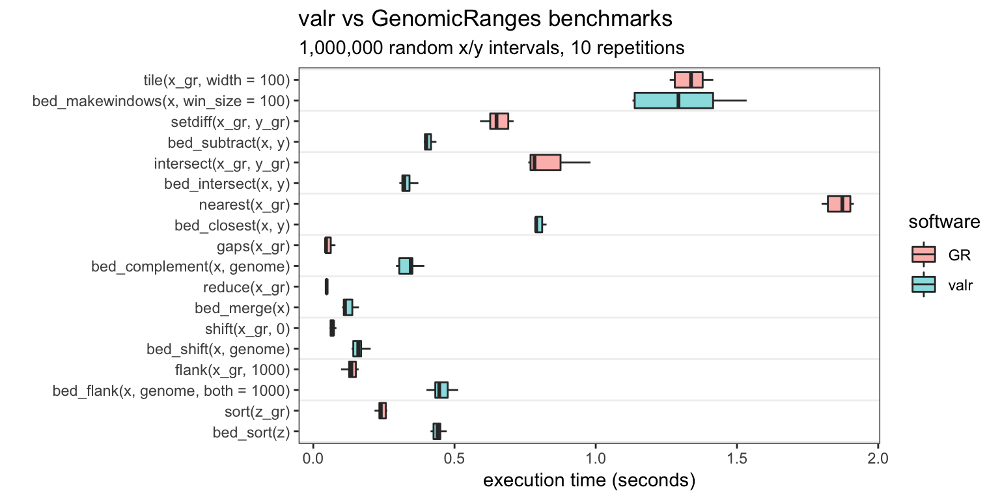

valr Functions
Many valr functions are written in Rcpp/C++ to maximize speed. Here are benchmarks for 1 million random x and y intervals.

Comparison to GenomicRanges
Several functions in valr are comparable in speed to the equivalent function in GenomicRanges.
